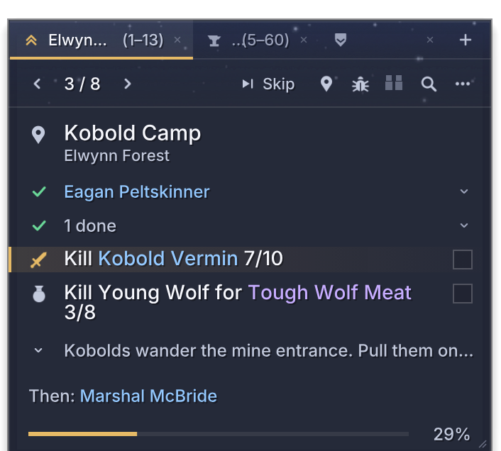

MOCK-UP — sample dataPSGroupFinder v1.0.0 · drawn from UI.lua / Polestar.lua / Lang.lua, not a game screenshot

Group Finder
Group automatically (same quest)
Button in the Polestar header
Answer searches for my quests
Search languages
EN
Find a group
Options
State 1 · addon disabled: the eye icon is in the header, immediately to the left of the magnifying glass, dimmed (textMuted). The button under the window is hidden. Right-clicking the icon opens the panel.